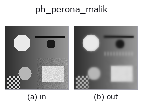

physics op• データ種: image → image
• 呼び出し: fullseye.apply(img, "ph_perona_malik", a=0.5, b=0.5) (2-D は 1 画像 + 2 スカラつまみ a,b∈[0,1] のモデル)

*図は合成の入力 128×128 で実際に走らせた出力。左が入力、右が出力。点群は上から見た散布(明るさ = z)、1-D 列は折れ線、体積は z 方向の最大値投影、動画は中央フレーム、複素画像は振幅、絵にならない返り値は値そのもの。*
つまみ a を振る(0.1 / 0.5 / 0.9、もう一方は既定):
▸ ph_perona_malik: knob a sweep (docs site)
つまみ b を振る(0.1 / 0.5 / 0.9、もう一方は既定):
▸ ph_perona_malik: knob b sweep (docs site)
別の画像でも(合成シーン / 写真 / 硬貨。上段が入力、下段がその出力。つまみは既定):
▸ ph_perona_malik: other inputs (docs site)
*4 列目はカラー (H,W,3) の入力。この op は色を跨がずに扱える(色チャネルを 3 本目の空間軸として畳み込まない)。*
ペロナ・マリクの異方性拡散（Perona-Malik anisotropic diffusion）（HALCON `anisotropic_diffusion`）。
> 以下の詳細説明は原文のままです —— 要約と見出しは訳出済み。
Explicit update I <- I + lam * sum_dir g(|grad_dir|) * grad_dir with the
Perona-Malik conductance `g(s) = 1/(1+(s/k)^2)`: on a strong edge (|grad|>>k)
g->0 so the edge is preserved, while inside a flat noisy region (|grad|<<k)
g->1 so it diffuses like the heat equation. `a` sets the number of steps,
`b the edge threshold k`.
• gallery2d_physics_alife_3d ファミリ ガイド
• サンプルデータ カタログ(DL URL / ライセンス) — 2-D は skimage.data(BSD/public)+ 合成、3-D は実データ源(Stanford/PDS 等)の DL URL。
• 演算子の来歴・参考文献 — この op 族の元になった研究/手法の出典。
• アルゴリズムの正典(著者・年)と用途は上記ファミリ使い方ガイドに記載。
下のプログラムは実際に走ることを確かめてある(図と同じ入力)。Studio のヘルプではこのブロックがボタンになり、その場で読み込んで実行できる。
ph_perona_malik 0.50 0.50
▸ Load this pipeline · Load & run
• gallery2d_physics_alife_3d — py -3.11 examples/gallery2d_physics_alife_3d.py
image を入力に取れる)identity · gaussian · mean_box · bilateral · unsharp · median · min_filter · max_filter
physics)ph_coherence_enhancing_diffusion · ph_reaction_diffusion · ph_heat_flow · ph_mean_curvature_motion · ph_total_variation_flow
*Provenance: ops.py — 2D operator registry. この per-op ノートは tools/opdocs.py md が自動生成(手編集しない)。*
© 2026 Kazufumi Furuse — Fullseye operator documentation. Licensed under Apache-2.0.
{kind=link}
{kind=link}
{kind=link}